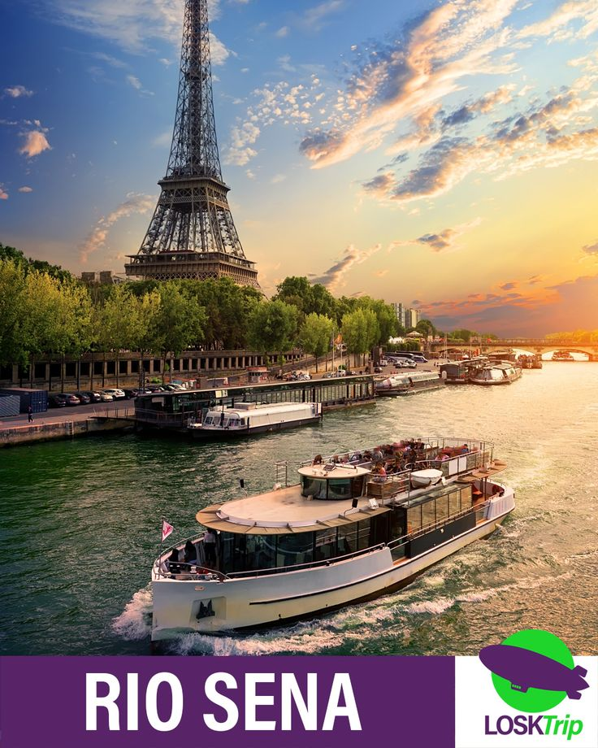
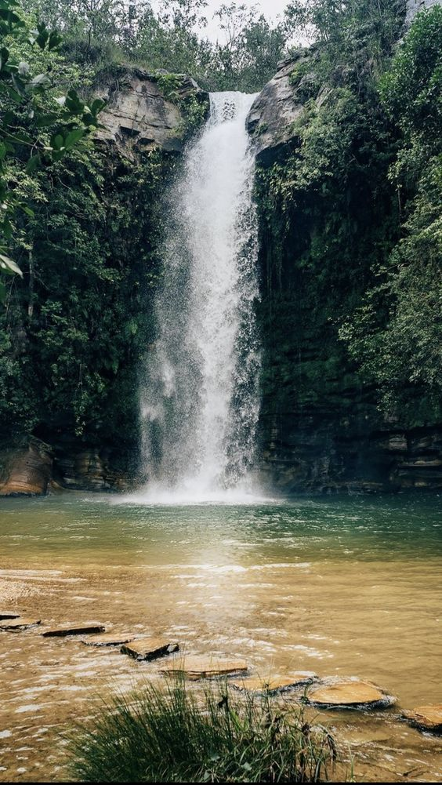
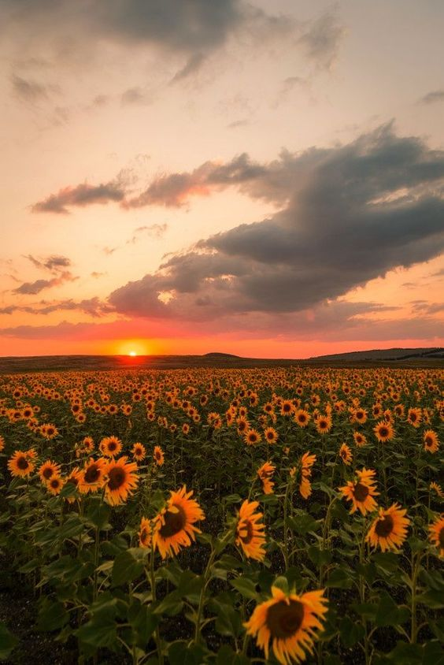

Passeio de barco
Embarque em uma experiência inesquecível navegando pelo deslumbrante Rio Sena! Mergulhe na beleza da cidade luz enquanto desliza suavemente pelas águas.
O que esperar:
Vista Panorâmica: Admire os ícones de Paris, como a Torre Eiffel, Notre-Dame e o Museu do Louvre, com uma perspectiva única.
Guia Especializado: Ouça histórias fascinantes sobre a história e a cultura de Paris, contadas por guias experientes.
Momento Relaxante: Desfrute da brisa suave e do ambiente tranquilo, perfeito para fotos incríveis e momentos de pura contemplação.
Duração: Passeios de 1 hora ou mais disponíveis.
Reserve já seu lugar e venha viver a magia de Paris sob uma nova perspectiva!
Não perca essa oportunidade de criar memórias inesquecíveis!
Ler mais

Passeio na cachoeira
Aventura nas Cachoeiras! Venha viver uma experiência revigorante em meio à natureza! Explore as maravilhas de nossas cachoeiras e descubra a beleza que só o contato com a natureza pode proporcionar. O que esperar: Cenários Deslumbrantes: Admire quedas d'água de tirar o fôlego e paisagens exuberantes que vão te encantar. Trilhas Aventureiras: Caminhe por trilhas seguras e bem sinalizadas, perfeitas para todos os níveis de habilidade. Banhos Revigorantes: Refresque-se nas águas cristalinas das cachoeiras, um convite irresistível para relaxar e se conectar com a natureza. Duração: Passeios de meio dia ou dia inteiro, com guias experientes prontos para te acompanhar. Reserve agora e venha se encantar com a beleza das cachoeiras! Não perca essa chance de criar memórias inesquecíveis em meio à natureza!
Ler mais

Foto ao ar livre
Venha viver uma experiência revigorante em meio à natureza! Explore as maravilhas de nossas cachoeiras e descubra a beleza que só o contato com a natureza pode proporcionar.
O que esperar:
Cenários Deslumbrantes: Admire quedas d'água de tirar o fôlego e paisagens exuberantes que vão te encantar.
Trilhas Aventureiras: Caminhe por trilhas seguras e bem sinalizadas, perfeitas para todos os níveis de habilidade.
Banhos Revigorantes: Refresque-se nas águas cristalinas das cachoeiras, um convite irresistível para relaxar e se conectar com a natureza.
Duração: Passeios de meio dia ou dia inteiro, com guias experientes prontos para te acompanhar.
Reserve agora e venha se encantar com a beleza das cachoeiras! Não perca essa chance de criar memórias inesquecíveis em meio à natureza!
Ler mais